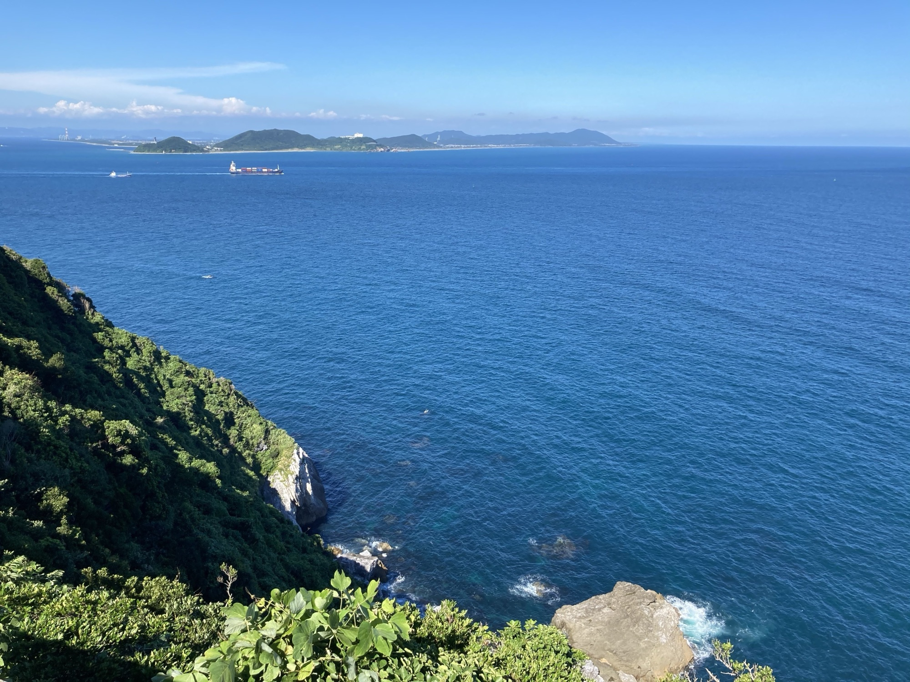
歌島
「歌島」とは、現在の三重県鳥羽市に位置する「神島」の古い呼び名であり、三島由紀夫の10作目の小説『潮騒』の舞台として広く知られている。
三重県出身で、4年ほど前に神島を実際に訪れたことのある自分にとって、『潮騒』という作品は以前から気になる存在ではあった。しかし、正直に言えば小説という形式にあまり馴染みがなく、なかなか手が伸びなかった。そんななか、今度参加予定の読書会で『潮騒』が課題図書に選ばれたことがきっかけとなり、ようやく本格的にこの作品と向き合うことになった。
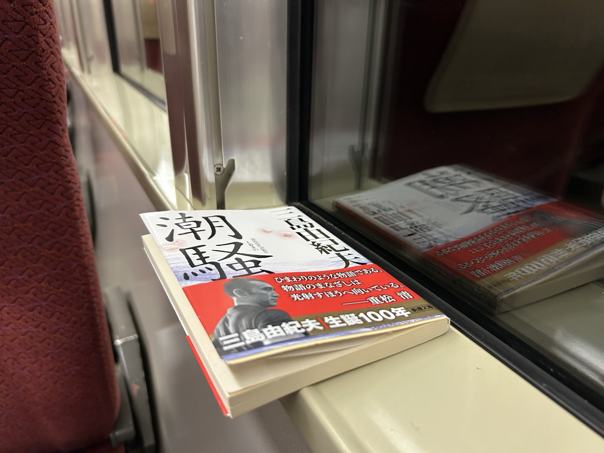
というわけで、先日『潮騒』を一気に読み進めた。
読書中、印象に残った表現をいくつかメモしていたが、すべて挙げるとキリがない。ここでは、特に心に残った5つの文章を紹介したい。
厨口の硝子戸に奥さんの影がうごいている。食事の仕度にかかっているらしい。若者はそとから声をかけた。奥さんは戸をあけた。新潮文庫『潮騒』P11
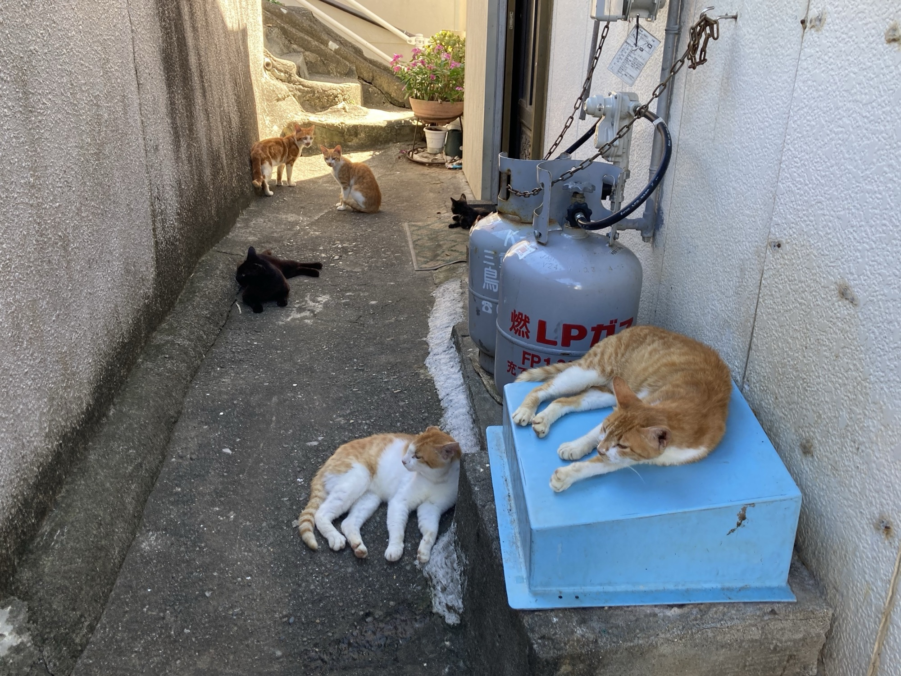
若者は山頂へ登った。ここは歌島の最も高いところである。しかし榊、茱萸などの灌木や高草に囲まれて、視野は利かない。草木のあいだから潮騒がひびいてくるだけである。ここあたりから、南へ下りる道はほとんど灌木や草に侵され、観的哨跡へゆくまでは、可成な迂路を辿らなければならなかった。新潮文庫『潮騒』P29
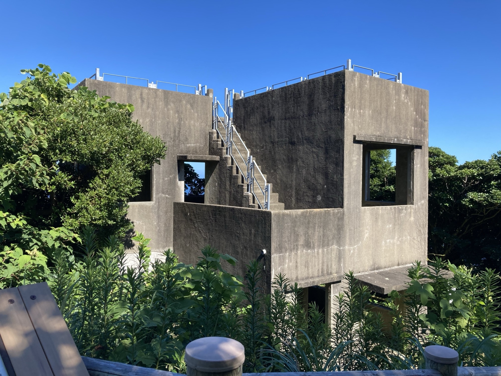
若者は彼をとりまくこの豊饒な自然と、彼自身との無上の調和を感じた。彼の深く吸う息は、自然をつくりなす目に見えぬものの一部が、若者の体の深みにまで滲み入るように思われ、彼の聴く潮騒は、海の巨きな潮の流れが、彼の体内の若々しい血潮の流れと調べを合わせているように思われた。新治は日々の生活に、別に音楽を必要としなかったが、自然がそのまま音楽の必要を充たしていたからに相違ない。新潮文庫『潮騒』P46
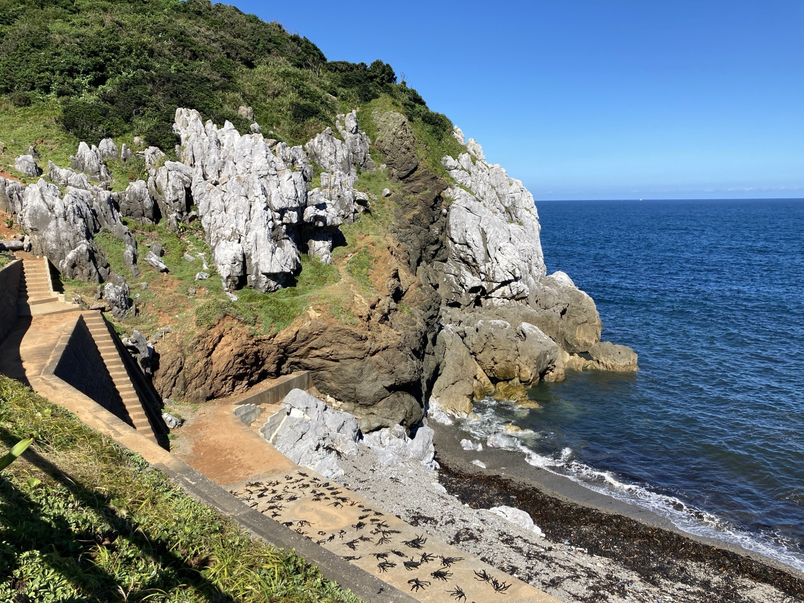
宏の春休みは終りに近づいていた。そこで彼は朝起きてから寝るまで一生けんめい遊んだ。島の遊び場所はゆたかであった。京都や大阪で、かねて話にきいていた西部劇の映画をはじめて見てから、西部劇をまねる新らしい遊びが、宏の遊び仲間にはやった。海をへだてた志摩半島の元浦あたりに、山火事の煙がのぼるのを見ると、かれらはインディアンの砦であげる狼煙を想わずにはいられなかった。新潮文庫『潮騒』P99-100
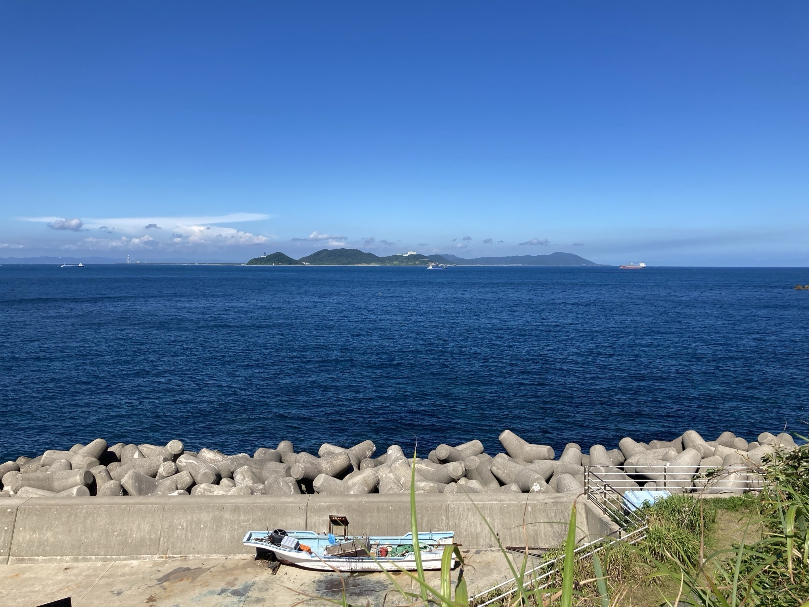
彼は風呂場の硝子戸を引きあげた。かなり混んでいて、おびただしい湯気のなかに人の起居の輪郭がおぼろげにみえた。水音や桶のぶつかる明るい木の音や笑い声は天井に反響し、一日の労働のあとの解放感が、豊かな湯と共に溢れている。新潮文庫『潮騒』P111
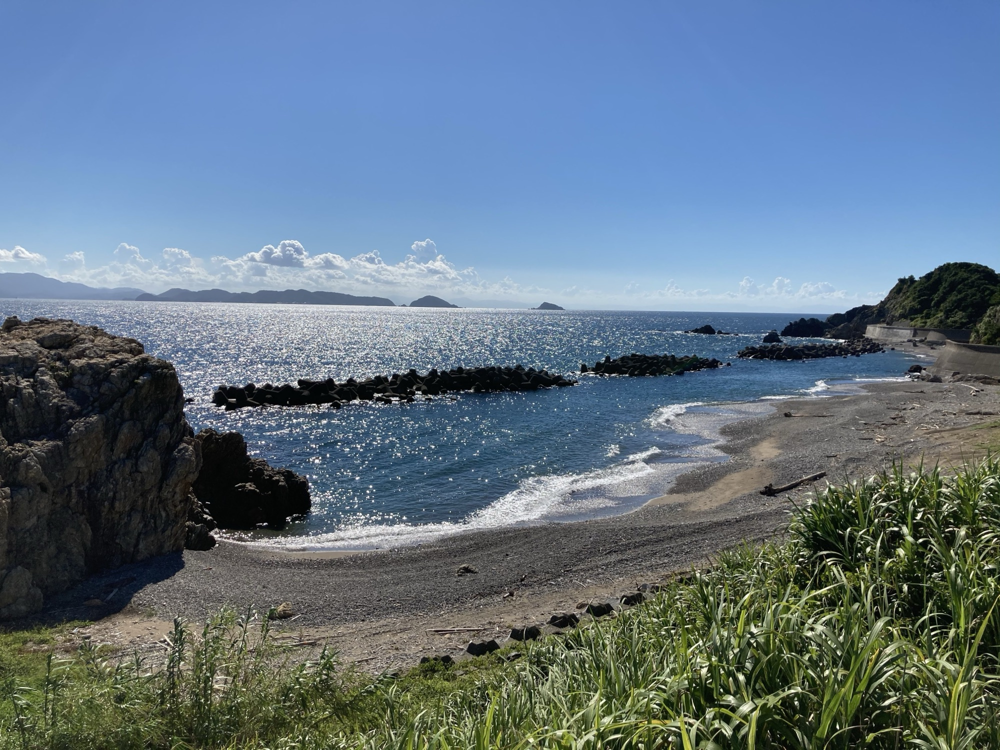
こうして振り返ってみると、自分が心を動かされたのは、登場人物のセリフや物語の転換点といった「ドラマティックな瞬間」ではなく、むしろその周囲にある風景や生活のディテールだった。三島由紀夫の筆致は、情景をありありと描き出すだけでなく、その中に登場人物の内面や時代の空気を巧みに織り込んでいる。これは、実際に神島を訪れたことのある自分にとって、言葉の裏側にある空気感までも思い起こさせるような読書体験となった。
『潮騒』はしばしば純愛小説として語られるが、個人的には「人と自然の距離感」「共同体の中で生きるということ」「風土と人間の関係性」といったテーマがより印象的である。
またいつか、『潮騒』の文庫本をリュックに入れて、鳥羽港から船に乗り、再び神島へ渡ってみたい。
2021.8.4 神島
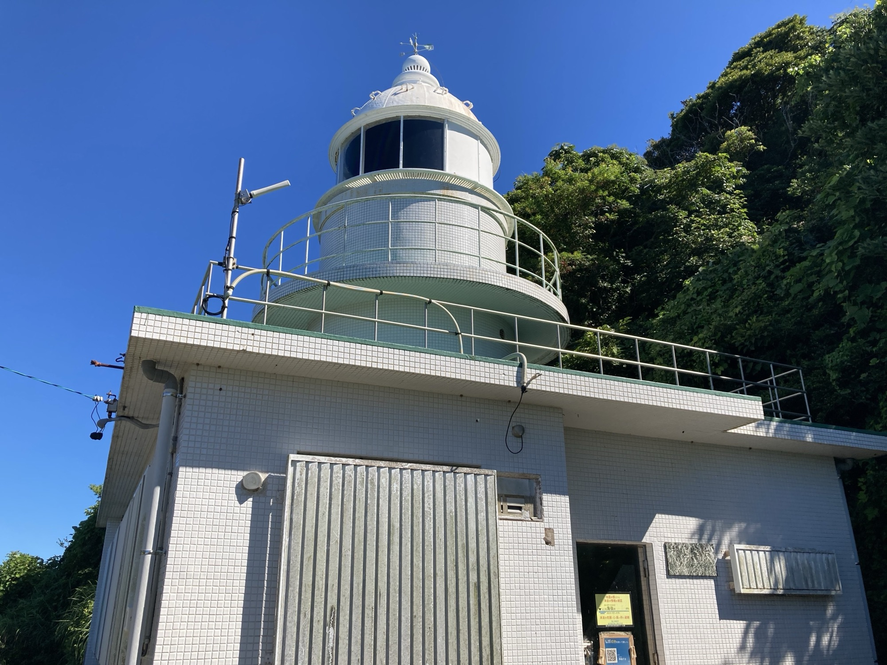
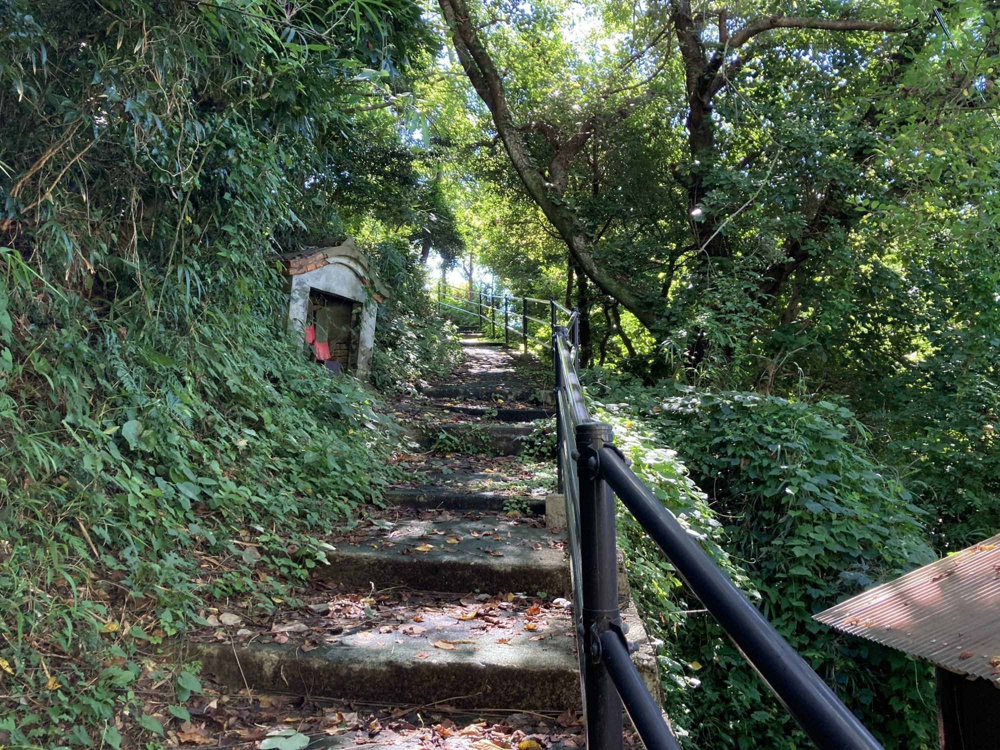
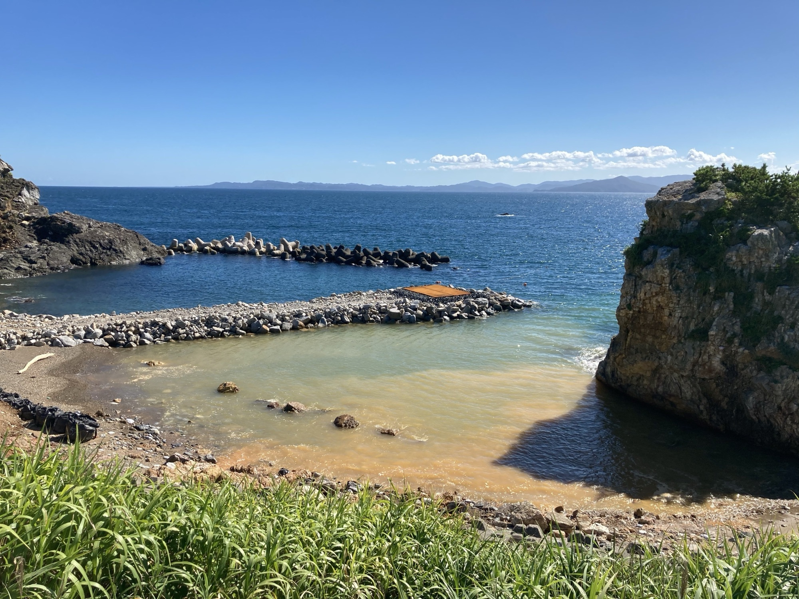
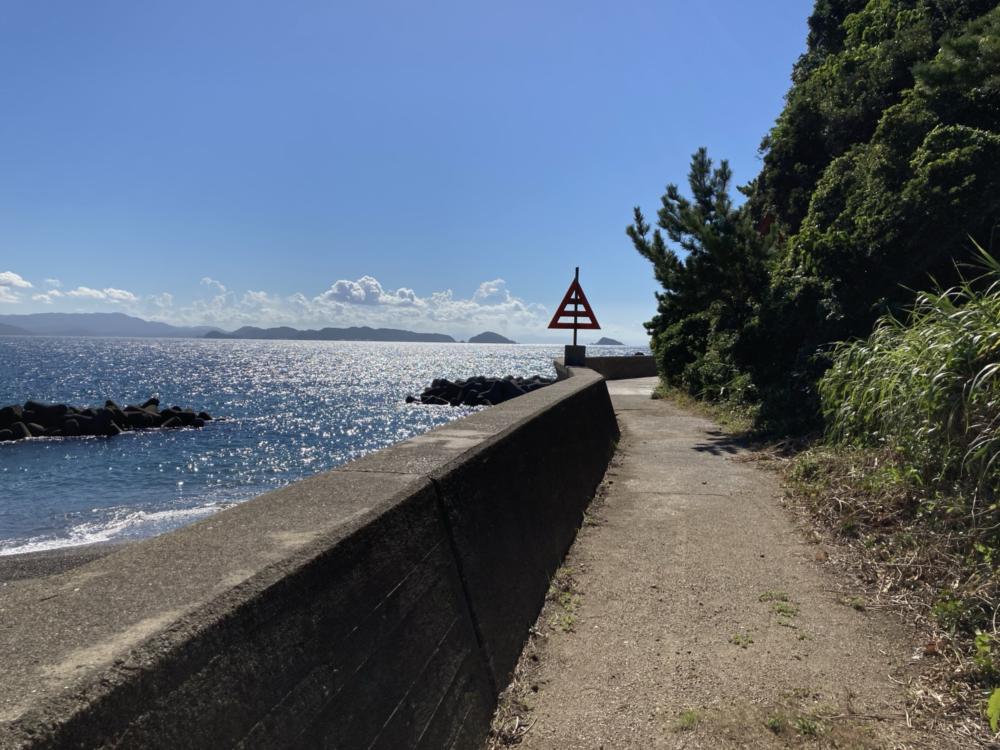
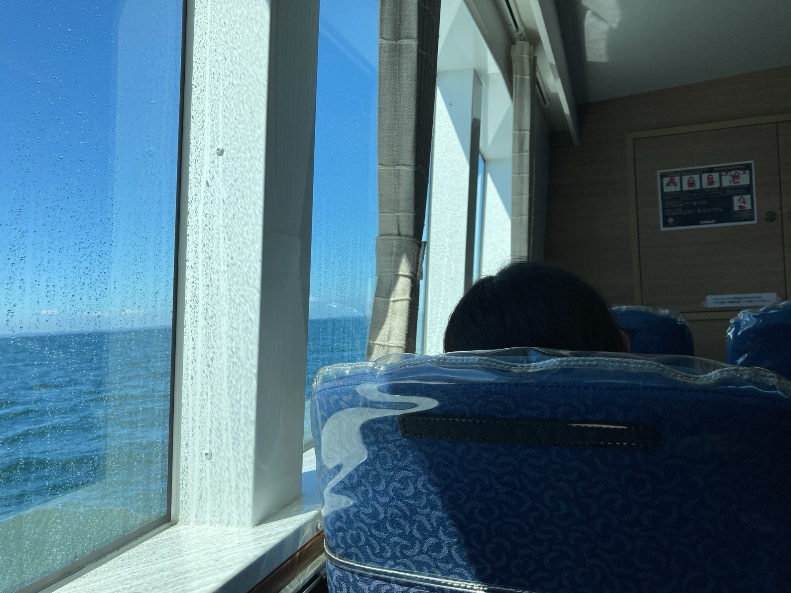
神島へ渡る
- 乗り場
- 鳥羽マリンターミナル（佐田浜）
近鉄・JR 鳥羽駅から歩いてすぐ - 船
- 鳥羽市営定期船 神島航路
1日4便・約30〜40分 - 運賃
- 大人片道 740円
全航路1日フリー乗船券 1,480円 - 帰り
- 神島発の最終便は夏期 18:05、冬期 17:35
2026年4月1日改正ダイヤによる。荒天で欠航・変更あり。最新の時刻は鳥羽市定期船課（0599-25-4776）へ。